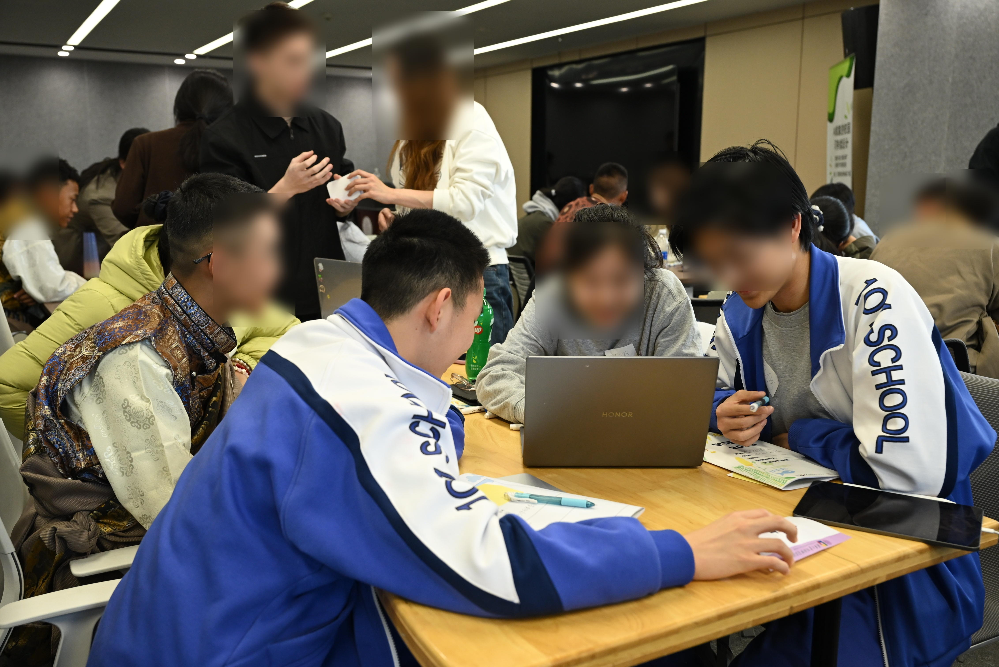
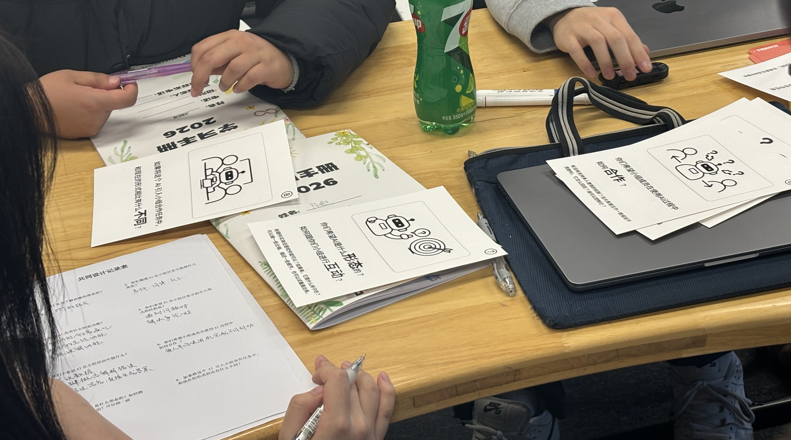

2026 / Co-design and collaborative learning
Participation around GenAI in Group Learning
Study completed · Manuscript under review

How does a shared generative AI interface shape who participates and whose ideas influence group work? This project examines how secondary-school students collaborate around AI and what it means to contribute to collective decisions.
My contribution
I designed the study and workshop procedure and developed the activity materials. I helped organize the workshop, collaborated on data analysis, and contributed to selected sections of the manuscript.
Approach
We conducted a qualitative co-design study with 27 students aged 12–18 in six groups. The workshop combined AI-mediated group work with reflection and co-design. Our analysis drew on student and teaching-assistant interviews, workshop records, and artifacts.

Research insights
Control over prompting and response selection shaped whose ideas informed the group's work. Co-design also revealed a tension between expanding individual input and preserving direct peer exchange. The project examines how contributions can become open to collective review and how groups can negotiate AI involvement.